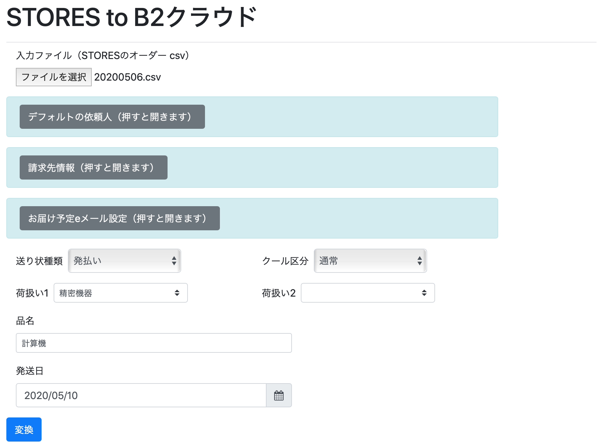

STORES to B2クラウド
STORESのオーダーcsvを、ヤマト運輸 B2クラウドの送り状基本レイアウトcsvに変換します。
現時点では、利用者がWebサーバを設置する必要があります。全ての処理はブラウザ側で行われるので、顧客データがWebに流れる心配がありません。また、ローカルPCのWebサーバでも問題なく動作します。

特徴
オーダーcsvからB2クラウドのレイアウト変更は、B2クラウドの紐付け機能でもできますが、このプログラムでは以下のことができます。
- 「依頼主」を原則として事業者に設定するが、STORESの「ギフト」で購入されたものは、購入者が依頼主に設定される。
- 複数アイテムが含まれるひとつの注文を、B2クラウド向けにひとつにまとめる（B2クラウドの紐付け機能を使った場合は、そのままだと伝票が２つ出てしまう）
- STORESのオーダーで「備考」を表示する。「備考」に時間指定などがあった場合、B2クラウド側で指定するときに利用できる。
STORESのB2クラウド対応との比較
2020-6-17、STORES自身がB2クラウドに対応しました
現時点での差異は以下のとおりです。（STORES本体に現時点でははいっていない機能も、全部はいるといいなー）
STORES-to-B2クラウドでは行っていないもの
- STORES本体の機能では、「品名1」に購入アイテム名がはいります。STORES-to-B2クラウドでは固定の値が入ります。
STORES本体機能では行っていないが、B2クラウド側で一括設定可能なもの
以下の2点は、STORES-to-B2クラウドで事前に設定できます。 STORES本体の機能には実装されていませんが、B2クラウド側に読み込んだあとに一括設定すればOKです。
- 送り状種別
- 荷扱い
- 発送日（STORES本体機能では当日固定で出力される）
STORES本体機能で行っておらず、B2クラウド側でも一括設定ができないもの
以下の2点は、ひとつずつSTORESのオーダー情報を確認しながらB2クラウド設定が必要になります。
- STORES-to-B2クラウドでは、「ギフト」機能が使われた場合には、購入者が依頼主に設定されます。STORES本体の機能では、「依頼主」は固定の値です。
- STORES-to-B2クラウドでは、「お届け予定eメール設定」を購入者のe-mail宛に設定します。STORES本体の機能では「お届け予定eメール設定」は設定されません。
ビルド
リリースページから、ビルド済みのzipをダウンロードできます。
node.jsを用意すれば、手元でビルドすることもできます。
npm install && npm run build設定
default-data.jsonを用意します。dafault-data-template.jsonをもとにしてください。
{
"senderZip" : "1000001",
"senderAddress" : "東京都千代田区千代田1-1-1",
"senderAddress2" : "山田荘101",
"senderTel" : "090-1111-1111",
"senderName" : "山田たろう",
"customerId" : "1234567890",
"contentsName" : "計算機",
"handling1" : "精密機器",
"handling2" : "水濡厳禁",
"customerKind" : "",
"fareId" : "01",
"cool" : 0,
"sendKind" : 0,
"useScheduleEmail" : true,
"scheduleEmailMessage" : "このたびは、当社をご利用いただきありがとうございました。\n今回ご注文頂きました商品を本日クロネコヤマトで発送いたしました。"
}-
senderで始まる要素は、デフォルトの依頼人です。 -
contentsNameは品名にはいります。（STORESのアイテム名は今は反映させていません） -
handling1・handling2は、荷扱い１・荷扱い２に入ります。精密機器・ワレ物注意・下積厳禁・天地無用・ナマモノ・水濡厳禁がB2クラウドのUIから指定できる既定値ですが、任意の文字列を受け付けます。 -
customerIdは、B2クラウドの顧客コードです。 -
customerKindは、B2クラウドの請求先分類コードです。 -
fareIdは、B2クラウドの運賃管理番号です。 -
coolはクール便区分です。0：通常 2:クール冷蔵 1:クール冷凍 -
sendKindは送り状種類です。0 : 発払い 3 : ＤＭ便 4 : タイム 5 : 着払い 7 : ネコポス 8 : 宅急便コンパクト -
useScheduleEmail: お届け完了eメールを利用するかどうか設定します。trueで利用、falseで利用しない。 -
scheduldEmailMessage: お届け完了eメールのメッセージ部分テキストです。
設置
Webサーバ上の適切な場所に、index.html、build/index.js、default-data.configを設置してください。rsyncを使う場合は、deploy-template.shも参考になるでしょう。
使い方
ページを開き、「入力ファイル」に、STORESからダウンロードしたオーダーcsvを指定します。その他の設定を必要に応じて変更した上で、「変換」ボタンを押してください。 「B2クラウド用csvダウンロード」のリンクが現れます。STORESオーダーで備考に書かれていることがあれば、その下の領域に表示されます。
ダウンロードしたcsvを「送り状発行システムB2クラウド」の「外部データから発行」で、「基本レイアウト(csv)」を選択した上でアップロードしてください。 「取り込み開始行」は2行目です。
利用上の注意点
オーダーのステータス
- STORESでステータスが「未注文」または「入金待ち」のオーダーを変換します。「入金待ち」のオーダーについては画面上に警告メッセージを表示します。
- 「キャンセル」や「完了」のデータが含まれていた場合は、変換処理全体を行いません。
住所情報
STORESの住所情報は、B2クラウドの情報ほど細かく分かれていません。このため、「アパート・マンション名」が正しく抽出できません。 カタカナが2文字以上続く場所から後を「アパート・マンション名」とみなして分割しますが、カタカナではないアパート名などで問題が発生します。
B2クラウドで読み込み後に修正してください。
変換後のcsvをExcelで開く
文字コードがUTF-8のため、Excelで直接開くと文字化けします(Numbersでは問題ありません）。もしExcelで開きたい場合は、Excelの「外部データの取り込み」を利用してください。手順は以下の通りです。
- Excelで新規ファイルを開く。
- 「データ」タブの「テキストファイル」を押す。
- csvファイルを指定し、「データ取り出し」を押す。
- 「元のファイル」のプルダウンメニューで「Unicode（UTF-8)」を選択し、「次へ」を押す。
- 「区切り文字」で「カンマ」だけを選択する。（「タブ」などのチェックは外す）。「連続した区切り文字は一文字として扱う」のチェックが入っていないことを確認する。「文字列の引用符」は「"」を選ぶ。「「次へ」を押す。
- 「列のデータ形式」は標準を選ぶ。「完了」を押す。
- 「OK」を押す。
ライセンスなど
- encoding.jsを使っています。（encoding.jsのライセンスはMITです）
- 単純なコードで、改造は簡単だと思います。必要があればforkして変えていってください。
- AGPL3.0であることにご留意ください。万が一別のライセンスをご希望の場合はskoji@skoji.jpまでお問い合わせください。